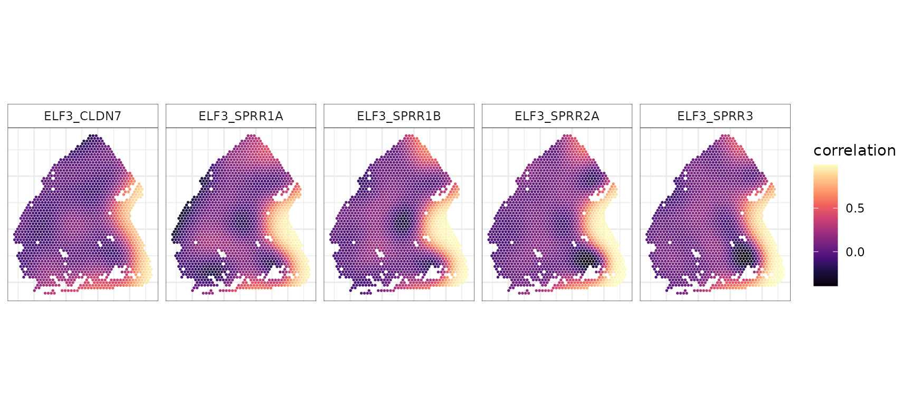

Chenxin
(Flora) Jiang
Department of Statistics and Data Science, University of California, Los
Angeles
cflorajiang@g.ucla.edu
spCorr-2D.RmdThis tutorial demonstrates how to use spCorr to (i) infer spot-level gene–gene correlations for specified gene pairs, and (ii) identify gene pairs exhibiting spatially varying correlation (SVC) patterns across a 2D spatial space.
In this example, we analyze a subset of the human oral squamous cell carcinoma (OSCC) dataset generated using the 10x Visium platform (sample 2 from Arora et al., 2023). We focus on transcription factor (TF)–target gene pairs curated from the TRRUST v2 database.
## Load example spatial transcriptomics data
# It contains two objects: counts (gene expression matrix) and cov_mat (spot-level covariates)
load(url("https://figshare.com/ndownloader/files/58905268"))
# counts: gene expression count matrix (genes x spots)
print(dim(counts))
#> [1] 15624 1747
# cov_mat: spot spatial coordinates and other spot-level covariates
print(dim(cov_mat))
#> [1] 1747 5
head(cov_mat)
#> x1 x2 cluster_annotations pathologist_anno.x
#> AAACATTTCCCGGATT-2 17022 16020 core SCC
#> AAACCGGGTAGGTACC-2 12218 6043 nc Lymphocyte Negative Stroma
#> AAACCGTTCGTCCAGG-2 14740 8064 edge SCC
#> AAACCTAAGCAGCCGG-2 18025 13992 nc SCC
#> AAACGAGACGGTTGAT-2 10469 13427 edge SCC
#> AAACGGGCGTACGGGT-2 18027 15149 transitory SCC
#> tumor_annotations
#> AAACATTTCCCGGATT-2 tumor
#> AAACCGGGTAGGTACC-2 nc
#> AAACCGTTCGTCCAGG-2 tumor
#> AAACCTAAGCAGCCGG-2 tumor
#> AAACGAGACGGTTGAT-2 tumor
#> AAACGGGCGTACGGGT-2 tumor
## Load TF–target gene pairs
tf_df <- readRDS(url("https://figshare.com/ndownloader/files/58905265"))
tf_df <- tf_df[tf_df$type=="Activation" | tf_df$type=="Unknown",]
head(tf_df)
#> tf target type id
#> 2 AATF CDKN1A Unknown 17157788
#> 4 AATF MYC Activation 20549547
#> 6 ABL1 BAX Activation 11753601
#> 9 ABL1 CCND2 Activation 15509806
#> 10 ABL1 CDKN1A Activation 11753601;9916993
#> 14 ABL1 JUN Activation 15145216Now we prepare the input data for spCorr analysis.
## Create gene pair list (data frame format)
gene_pair_list <- tf_df[, c("tf", "target")]
rownames(gene_pair_list) <- apply(gene_pair_list, 1, paste, collapse = "_")
## Extract the unique set of genes from these pairs
gene_list <- unique(c(gene_pair_list$tf, gene_pair_list$target))
## Check summary
cat("Number of selected gene pairs:", nrow(gene_pair_list), "\n")
#> Number of selected gene pairs: 1316
cat("Number of unique genes:", length(gene_list), "\n")
#> Number of unique genes: 601
head(gene_pair_list)
#> tf target
#> AATF_CDKN1A AATF CDKN1A
#> AATF_MYC AATF MYC
#> ABL1_BAX ABL1 BAX
#> ABL1_CCND2 ABL1 CCND2
#> ABL1_CDKN1A ABL1 CDKN1A
#> ABL1_JUN ABL1 JUNWe now apply spCorr to infer spot-level gene–gene correlations for the selected gene pairs and to identify gene pairs with spatially varying correlation (SVC) pattern across the 2D spatial space.
res <- spCorr(counts,
gene_list,
gene_pair_list,
cov_mat,
formula1 = "tumor_annotations",
family1 = "nb",
formula2 = "s(x1, x2, bs='tp', k=30)",
family2 = quasiproductr(),
DT = TRUE,
global_test = "lrt",
return_models = FALSE,
return_coefs = FALSE,
check_morani = FALSE,
preconstruct_smoother = FALSE,
ncores = 10,
seed = 123)
#> Start Marginal Fitting for 601 genes
#> Start Extracting Spatially Varying Gene Pairs
#> Start Product Fitting for 1316 gene pairs
str(res, max.level = 1)
#> List of 6
#> $ res_global : Named num [1:1316] 0.483 0.0795 0.2519 0.42 0.5005 ...
#> ..- attr(*, "names")= chr [1:1316] "AATF_CDKN1A" "AATF_MYC" "ABL1_BAX" "ABL1_CCND2" ...
#> $ edf : Named num [1:1316] 13.1 17.3 20.3 12.2 14.7 ...
#> ..- attr(*, "names")= chr [1:1316] "AATF_CDKN1A" "AATF_MYC" "ABL1_BAX" "ABL1_CCND2" ...
#> $ res_local : num [1:1316, 1:1747] 0.226 0.67 0.57 0.633 0.233 ...
#> ..- attr(*, "dimnames")=List of 2
#> $ res_local_pi:List of 1316
#> $ residuals : num [1:601, 1:1747] 0.237 0.251 0.231 0.244 0.201 ...
#> ..- attr(*, "dimnames")=List of 2
#> $ marginals : num [1:601, 1:1747] -0.716 -0.67 -0.737 -0.694 -0.837 ...
#> ..- attr(*, "dimnames")=List of 2We next visualize the inferred spot-level correlations and SVC
patterns for specific gene pairs. The spot-level correlation estimates
are stored in res$res_local, which is a spot-by-gene pair
matrix.
# Specify gene pairs to visualize
gene_pair <- c("ELF3_SPRR1B", "ELF3_SPRR3", "ELF3_SPRR2A", "ELF3_SPRR1A", "ELF3_CLDN7")
rho_mat <- t(res$res_local[gene_pair, , drop = FALSE]) # spots × gene pairs
# Combine with covariates and reshape to long format
plot_data <- cbind(cov_mat, rho_mat) %>% as.data.frame() %>% pivot_longer(cols = all_of(gene_pair), names_to = "gene_pair", values_to = "rho")
p_corr <- ggplot(plot_data, aes(x = x2, y = -x1, color = rho)) +
geom_point(size = 0.3) + scale_color_gradientn(colors = viridis_pal(option = "magma")(10), name = "correlation") +
coord_fixed(ratio = 1) + labs(x = NULL, y = NULL) +
facet_wrap(~gene_pair, nrow = 1) +
theme_minimal() + theme(
axis.text = element_blank(),
panel.border = element_rect(color = "black", fill = NA, linewidth = 0.2),
strip.background = element_rect(color = "black", fill = NA, linewidth = 0.2)
)
p_corr
The spCorr also provides SVC testing to identify
gene pairs whose correlations vary significantly across spatial
locations. The BH-adjusted p-values from the SVC testing are
stored in res$res_global.
sessionInfo()
#> R version 4.2.3 (2023-03-15)
#> Platform: x86_64-pc-linux-gnu (64-bit)
#> Running under: Ubuntu 22.04.5 LTS
#>
#> Matrix products: default
#> BLAS: /usr/lib/x86_64-linux-gnu/openblas-pthread/libblas.so.3
#> LAPACK: /usr/lib/x86_64-linux-gnu/openblas-pthread/libopenblasp-r0.3.20.so
#>
#> locale:
#> [1] LC_CTYPE=en_US.UTF-8 LC_NUMERIC=C
#> [3] LC_TIME=en_US.UTF-8 LC_COLLATE=en_US.UTF-8
#> [5] LC_MONETARY=en_US.UTF-8 LC_MESSAGES=en_US.UTF-8
#> [7] LC_PAPER=en_US.UTF-8 LC_NAME=C
#> [9] LC_ADDRESS=C LC_TELEPHONE=C
#> [11] LC_MEASUREMENT=en_US.UTF-8 LC_IDENTIFICATION=C
#>
#> attached base packages:
#> [1] stats graphics grDevices utils datasets methods base
#>
#> other attached packages:
#> [1] viridis_0.6.5 viridisLite_0.4.2 tidyr_1.3.1 dplyr_1.1.4
#> [5] ggplot2_4.0.0 spCorr_0.0.0.9000 BiocStyle_2.26.0
#>
#> loaded via a namespace (and not attached):
#> [1] tidyselect_1.2.1 xfun_0.53 bslib_0.9.0
#> [4] purrr_1.1.0 splines_4.2.3 lattice_0.22-6
#> [7] vctrs_0.6.5 generics_0.1.4 htmltools_0.5.8.1
#> [10] yaml_2.3.10 mgcv_1.9-3 rlang_1.1.6
#> [13] pkgdown_2.1.3 jquerylib_0.1.4 pillar_1.11.1
#> [16] glue_1.8.0 withr_3.0.2 RColorBrewer_1.1-3
#> [19] S7_0.2.0 lifecycle_1.0.4 gtable_0.3.6
#> [22] ragg_1.5.0 htmlwidgets_1.6.4 evaluate_1.0.5
#> [25] labeling_0.4.3 knitr_1.50 fastmap_1.2.0
#> [28] parallel_4.2.3 Rcpp_1.1.0 scales_1.4.0
#> [31] BiocManager_1.30.26 cachem_1.1.0 desc_1.4.3
#> [34] jsonlite_2.0.0 farver_2.1.2 systemfonts_1.3.1
#> [37] fs_1.6.6 gridExtra_2.3 textshaping_1.0.4
#> [40] digest_0.6.37 bookdown_0.45 grid_4.2.3
#> [43] cli_3.6.5 tools_4.2.3 magrittr_2.0.4
#> [46] sass_0.4.10 tibble_3.3.0 dichromat_2.0-0.1
#> [49] ape_5.8-1 pkgconfig_2.0.3 Matrix_1.6-5
#> [52] rmarkdown_2.30 rstudioapi_0.17.1 R6_2.6.1
#> [55] nlme_3.1-164 compiler_4.2.3